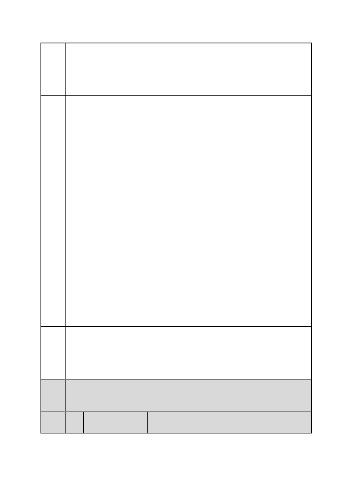

臺北市都市計畫委員會 公民或團體陳情意見綜理表
案
名
市府
回應
委員
會議
決議
編
號
「變更臺北市信義區逸仙段二小段 33 地號等 21 筆土地（原臺北機廠）
工業區為創意文化專用區、特定專用區、道路及綠地用地主要計畫案」
及「擬定臺北市信義區逸仙段二小段 33 地號等 21 筆土地（原臺北機
廠）創意文化專用區、特定專用區、道路及綠地用地細部計畫暨劃定
都市更新地區計畫案」
以做一個世界級的鐵道博物館，屆時台鐵可以收取用地租金，不必擔
心虧損問題。那經營者也未必是台鐵啦，也可以直接由交通部或文化
部直轄，或是成立一個基金會來作維護，台鐵就負責賣地和賣火車、
機具之類的展示品。反正經營的方式有很多種，台鐵和政府其實不會
吃虧的；雖然短期來看效益或許比不上開發，但長久來看，這是一種
穩定創造財源的方式。
照這樣的安排，歷史的記憶大致得以保存，政府與台鐵也能夠掙得利
潤，我們想這樣應該可以稱得上是雙贏的局面吧。
最後，我們要說的是，我們並不是一味的反對政府、不考慮政府的考
量，我們相信政府也不是完全自私自利，也是在各方力量的不斷拉扯
下，不斷調整，才提出這樣的方案。但是我們確實有看到問題，我們
就希望提出來讓政府改善。我們根本的關懷是我們生活的這一整片土
地，相信政府也應該是這樣的；所以我們希望創造政府與民眾問一種
理性互助的關係，彼此良好地溝通，彼此體諒，共同努力創造最好的
保存方式。所以我們也呼籲在場的各位，希望大家都用理性的方式溝
通：反對的人應該試圖去理解政府的想法，並提出解決的方案；政府
則要傾聽大家的聲音，真正仔細地考量人家的意見，而不要把來參加
的人都當作暴民。只有這樣，大家才能凝聚出共識，給北廠最好的未
來；否則就是你說你的、我罵我的，到最後兩敗俱傷。
當然？我們看到的或許還是有很多不完整或偏頗之處，但我們相信這
其中定有一些值得參考的地方，也希望我們的意見，能為北廠和我們
所在的這個都市，發揮一點渺小的力量，讓這塊地方變得更好。謝謝。
一、有關臺北機廠再利用之定位及鐵道文化資產之保留方式，詳如編
號 1 市府回應內容。
二、本計畫已重新考量園區規劃的完整性、鐵道文化資產的保存、及
與臺北文化體育園區的銜接，調整主要計畫及細部計畫內容，詳如編
號 35 市府回應說明四。
內容同編號 1。
46 陳情人
巫○霖
第 56 頁/共 154 頁